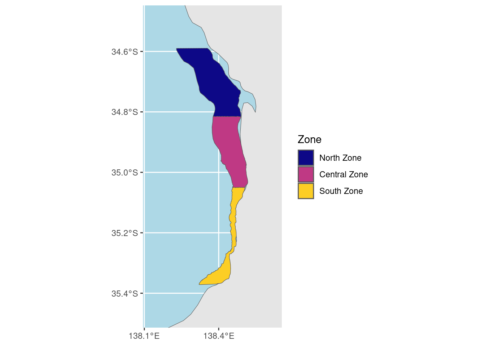
EDA_NDTI_MYD09GA
Adelaide Metro. Coastline zones
MODIS Aqua NDTI data was extracted from 2003 - 2021. There is an QA band issue that needs debugging with the imagery from 2022+.
Here we summarize all NDTI values for each zone by the median, the SD, and the number of observations.
Observations
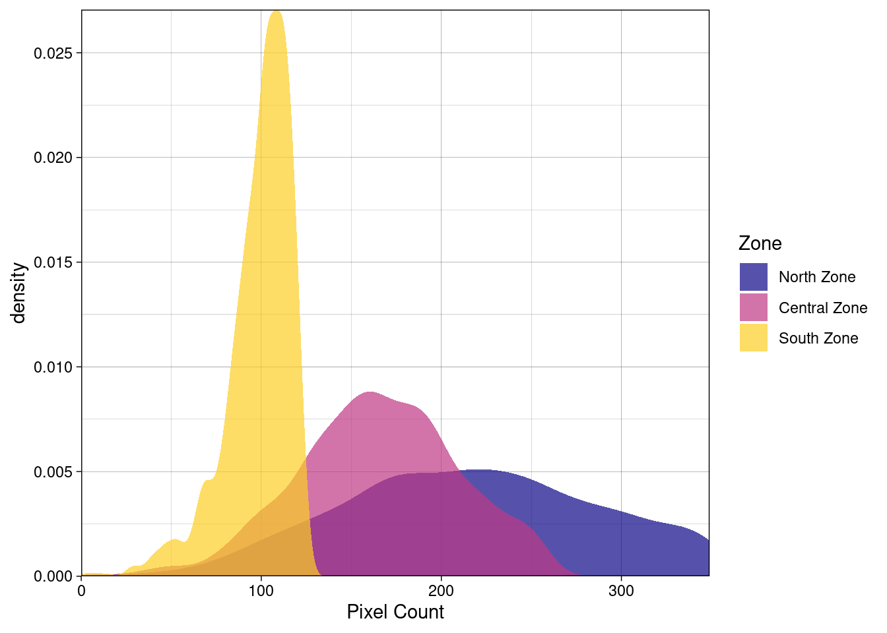
histogram of ndti by zone
Warning: Removed 1 rows containing non-finite values (`stat_density()`).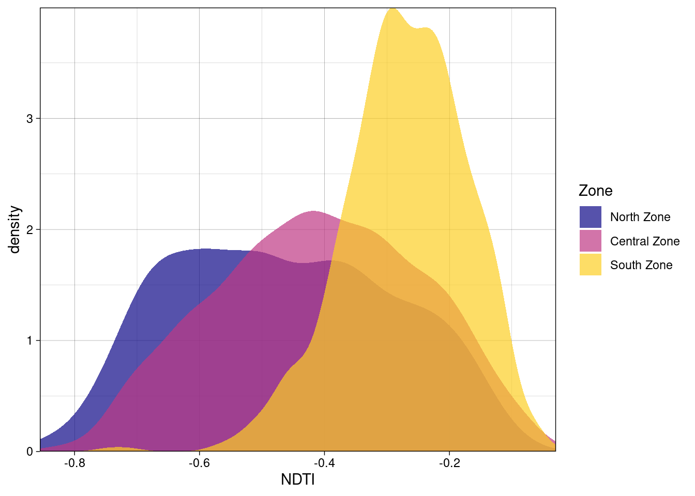
The Southern Zone has notably higher NDTI (more turbid). Is this plausible?
Standard Deviation of NDTI within zone
Warning: Removed 1 rows containing non-finite values (`stat_density()`).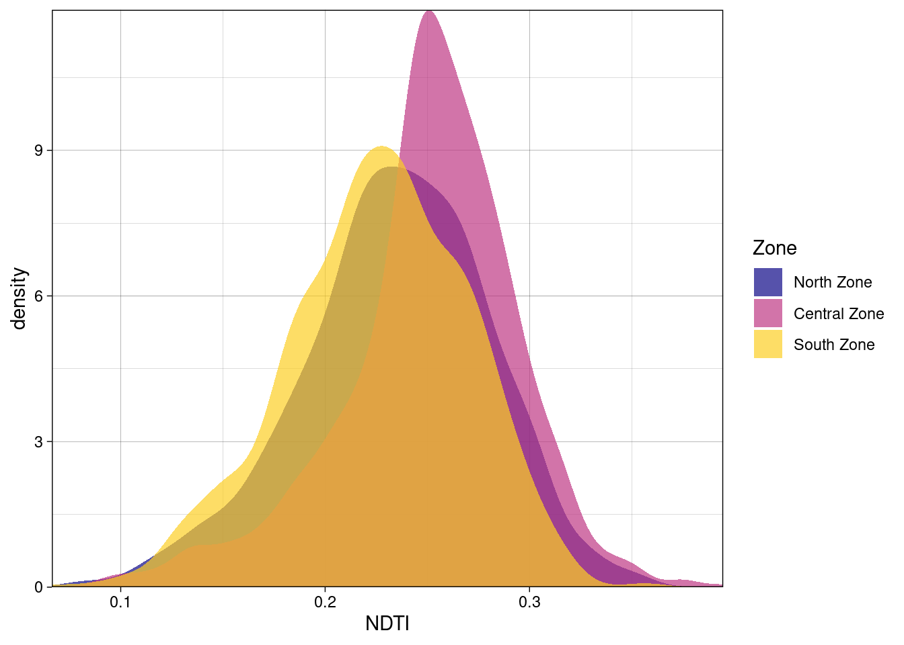
The Central zone seems slightly more variable than the others.
zonal median by week
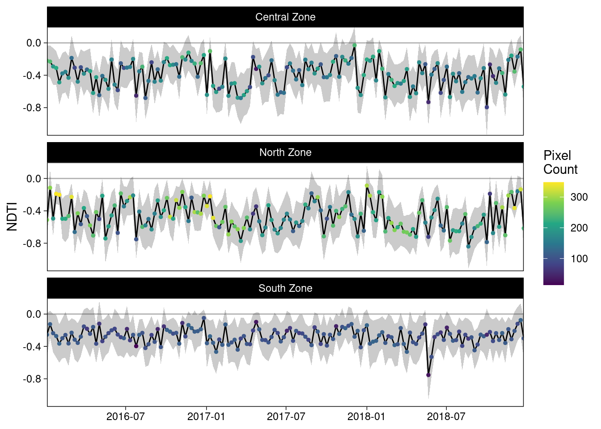
Modeling the seasonal and yearly components
start with seasonal component and zone
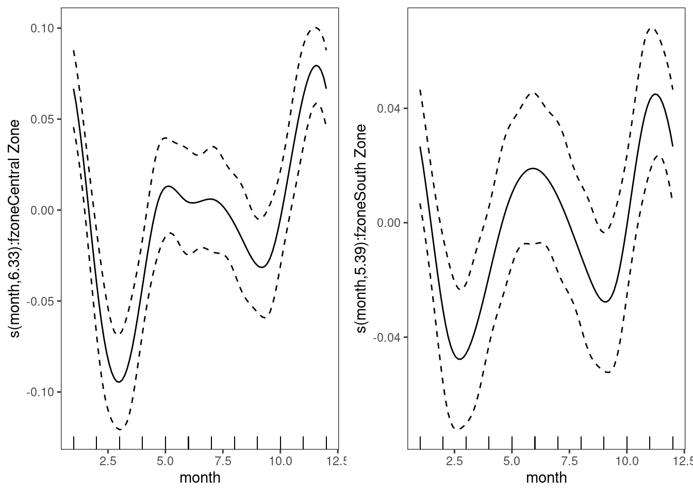
Cyclic month and zone as a factor
dAICc df
m2 0.0 10.9
m1 991.6 13.7Lower AIC on m2 suggests that each zone does not need its own monthly smoooth.
Add year component0
dAICc df
m3 0.0 11.9
m2 25.0 10.9
Family: gaussian
Link function: identity
Formula:
ndti ~ year + fzone + s(month, bs = c("cc"))
Parametric coefficients:
Estimate Std. Error t value Pr(>|t|)
(Intercept) -5.3384204 0.9524882 -5.605 2.28e-08 ***
year 0.0024632 0.0004734 5.203 2.09e-07 ***
fzone.L 0.1378612 0.0044917 30.692 < 2e-16 ***
fzone.Q 0.0334859 0.0044909 7.456 1.16e-13 ***
---
Signif. codes: 0 '***' 0.001 '**' 0.01 '*' 0.05 '.' 0.1 ' ' 1
Approximate significance of smooth terms:
edf Ref.df F p-value
s(month) 6.91 8 42.66 <2e-16 ***
---
Signif. codes: 0 '***' 0.001 '**' 0.01 '*' 0.05 '.' 0.1 ' ' 1
R-sq.(adj) = 0.316 Deviance explained = 31.8%
GCV = 0.019997 Scale est. = 0.019923 n = 2963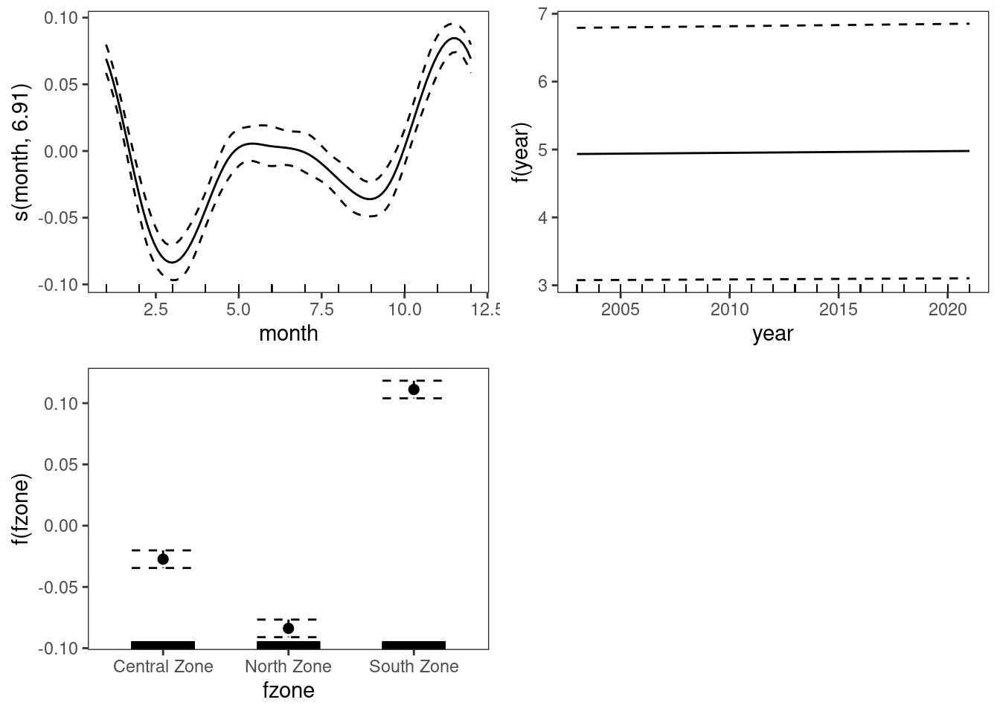
Examine year as a nonlinear effect
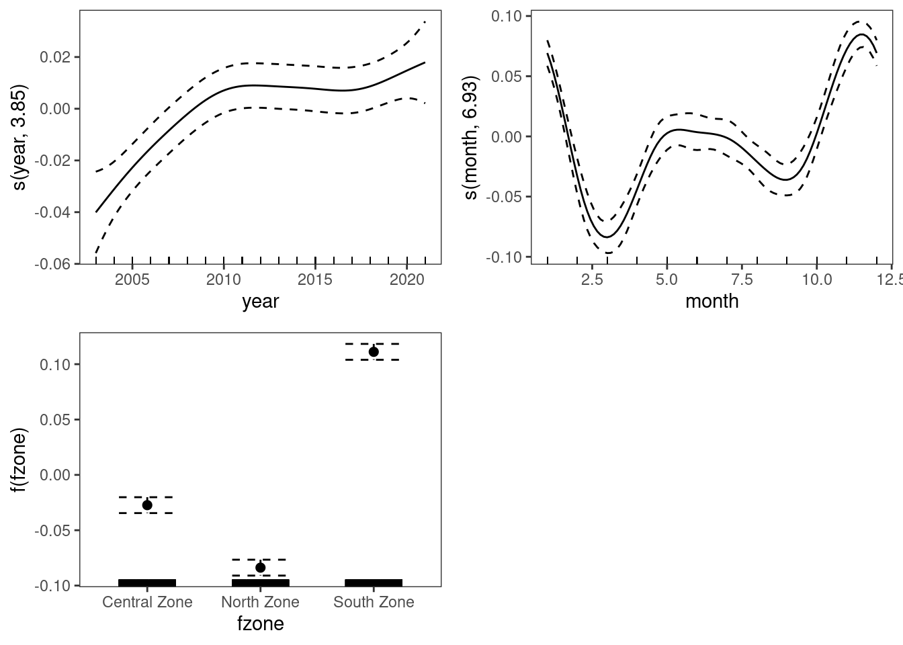
Family: gaussian
Link function: identity
Formula:
ndti ~ s(year) + fzone + s(month, bs = c("cc"))
Parametric coefficients:
Estimate Std. Error t value Pr(>|t|)
(Intercept) -0.382494 0.002589 -147.734 < 2e-16 ***
fzone.L 0.137864 0.004485 30.740 < 2e-16 ***
fzone.Q 0.033487 0.004484 7.468 1.07e-13 ***
---
Signif. codes: 0 '***' 0.001 '**' 0.01 '*' 0.05 '.' 0.1 ' ' 1
Approximate significance of smooth terms:
edf Ref.df F p-value
s(year) 3.854 9 4.213 <2e-16 ***
s(month) 6.931 8 42.825 <2e-16 ***
---
Signif. codes: 0 '***' 0.001 '**' 0.01 '*' 0.05 '.' 0.1 ' ' 1
R-sq.(adj) = 0.318 Deviance explained = 32.1%
GCV = 0.019955 Scale est. = 0.019862 n = 2963 dAICc df
m4 0.0 14.8
m3 6.2 11.9Examine nonlinear year effect by site
Family: gaussian
Link function: identity
Formula:
ndti ~ s(year, fzone, bs = "fs") + s(month, bs = c("cc"))
Parametric coefficients:
Estimate Std. Error t value Pr(>|t|)
(Intercept) 0.2539 0.4815 0.527 0.598
Approximate significance of smooth terms:
edf Ref.df F p-value
s(year,fzone) 8.471 30 34.77 <2e-16 ***
s(month) 6.912 8 42.84 <2e-16 ***
---
Signif. codes: 0 '***' 0.001 '**' 0.01 '*' 0.05 '.' 0.1 ' ' 1
R-sq.(adj) = 0.319 Deviance explained = 32.2%
GCV = 0.019947 Scale est. = 0.019836 n = 2963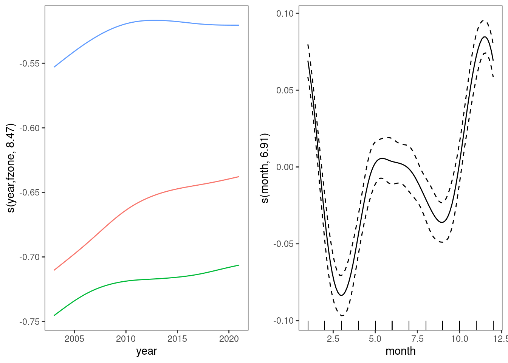
dAICc df
m5 0.0 17.4
m4 1.2 14.8Nonlinear year by site is better, but the AIC difference is very small. So we will drop the year x zone interaction.
Examine number of knots on year
We start with an equivalent number of knots per year, and will not aggressively penalize the ‘year’ smooth.
Family: gaussian
Link function: identity
Formula:
ndti ~ s(year, k = kn) + fzone + s(month, bs = c("cc"))
Parametric coefficients:
Estimate Std. Error t value Pr(>|t|)
(Intercept) -0.382494 0.002580 -148.243 < 2e-16 ***
fzone.L 0.137859 0.004469 30.845 < 2e-16 ***
fzone.Q 0.033485 0.004469 7.493 8.83e-14 ***
---
Signif. codes: 0 '***' 0.001 '**' 0.01 '*' 0.05 '.' 0.1 ' ' 1
Approximate significance of smooth terms:
edf Ref.df F p-value
s(year) 13.782 16.06 3.855 4.4e-07 ***
s(month) 6.915 8.00 43.257 < 2e-16 ***
---
Signif. codes: 0 '***' 0.001 '**' 0.01 '*' 0.05 '.' 0.1 ' ' 1
R-sq.(adj) = 0.322 Deviance explained = 32.8%
GCV = 0.019885 Scale est. = 0.019726 n = 2963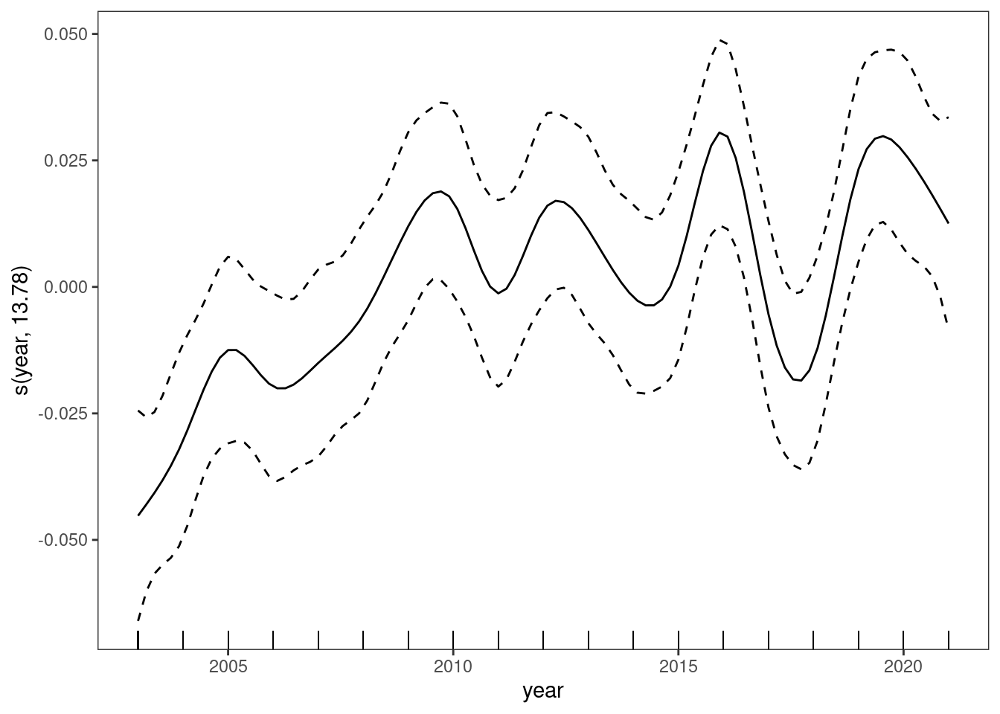
dAICc df
m6 0.0 24.7
m5 9.1 17.4Allowing the year effect to vary by year improves the fit.
Try a penalized year effect
This is to help determine how real these year to year peaks are.
Family: gaussian
Link function: identity
Formula:
ndti ~ s(year, k = kn, bs = "ts") + fzone + s(month, bs = c("cc"))
Parametric coefficients:
Estimate Std. Error t value Pr(>|t|)
(Intercept) -0.382494 0.002589 -147.719 < 2e-16 ***
fzone.L 0.137865 0.004485 30.737 < 2e-16 ***
fzone.Q 0.033488 0.004484 7.467 1.07e-13 ***
---
Signif. codes: 0 '***' 0.001 '**' 0.01 '*' 0.05 '.' 0.1 ' ' 1
Approximate significance of smooth terms:
edf Ref.df F p-value
s(year) 3.208 18 2.053 <2e-16 ***
s(month) 6.470 8 41.904 <2e-16 ***
---
Signif. codes: 0 '***' 0.001 '**' 0.01 '*' 0.05 '.' 0.1 ' ' 1
R-sq.(adj) = 0.318 Deviance explained = 32%
GCV = 0.019951 Scale est. = 0.019866 n = 2963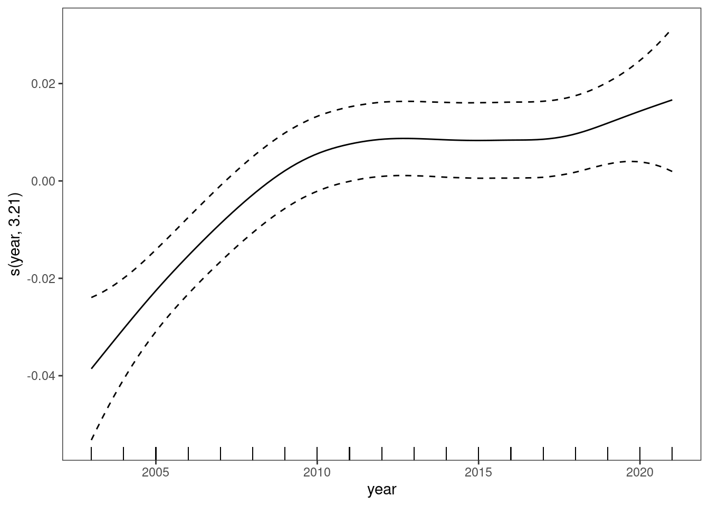
dAICc df
m6 0.0 24.7
m7 9.8 13.7The wiggly model is slightly better than the smoother effect.